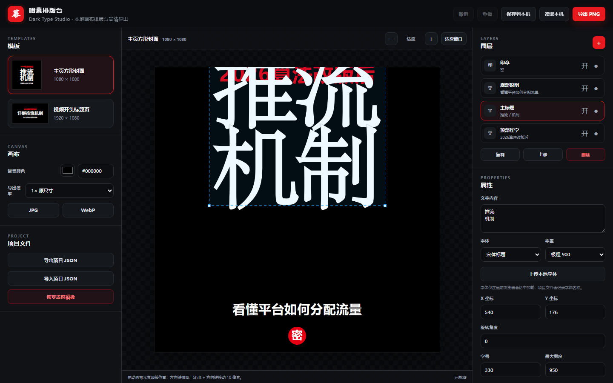

选一个比例
方形封面、视频开场、竖屏内容。先从正确的画布开始。
1:1
金石排字 / LOCAL TYPE COMPOSITION
一座为中文内容创作者留出的数字案头。把字、留白、比例和导出重新归到同一张画布，让每一次发布都有自己的气口。

THE WORKFLOW / 02
方形封面、视频开场、竖屏内容。先从正确的画布开始。
拖动图层，微调坐标，控制字重、间距、阴影和安全区。
一键导出 PNG、JPG 或 WebP。模板与项目文件也能继续复用。
STARTING POINTS / 03
WHY DARK TYPE / 04
暗幕排版台专注在一件事：让中文标题拥有明确的视觉秩序。没有素材库，没有复杂菜单，没有会替你做决定的黑箱，只有一个可以反复推敲的画布。
用自己的标题开始 ↗